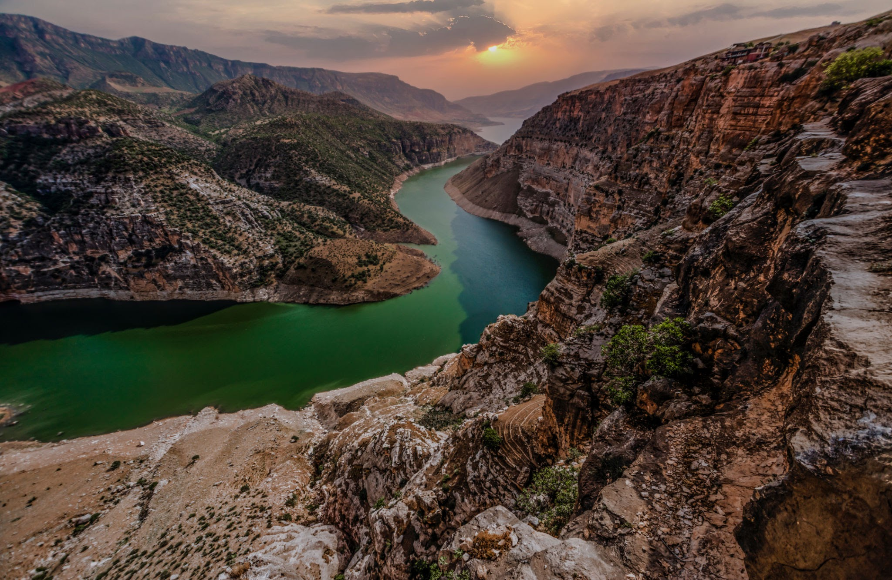
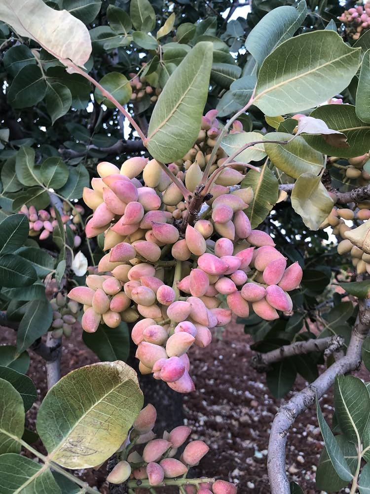
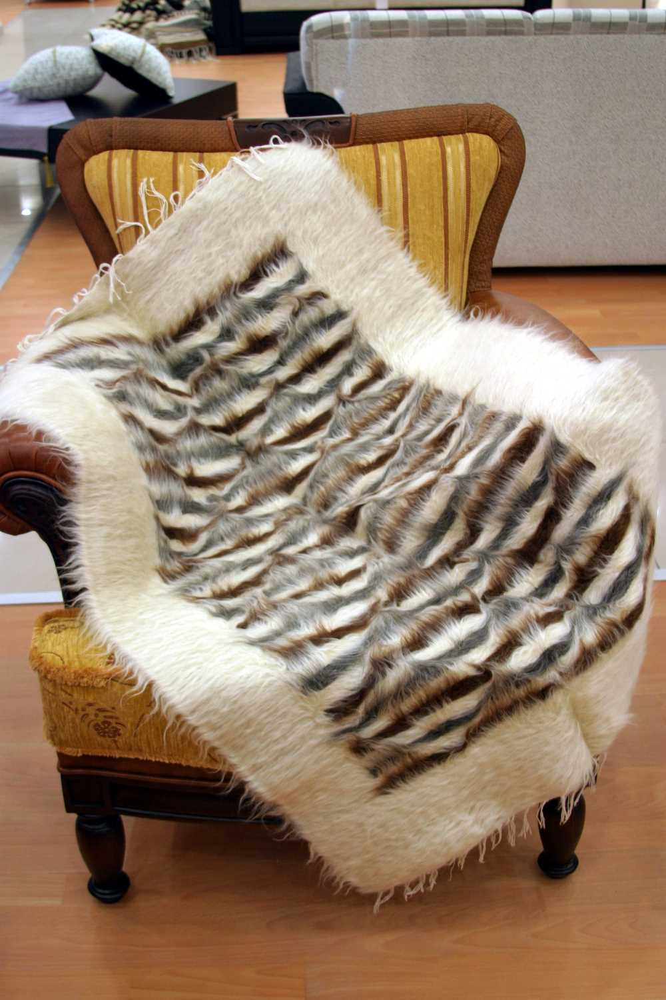
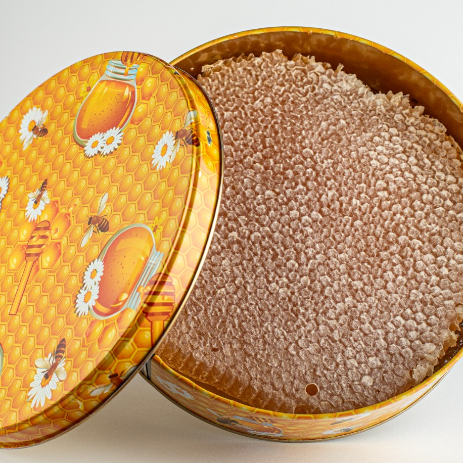
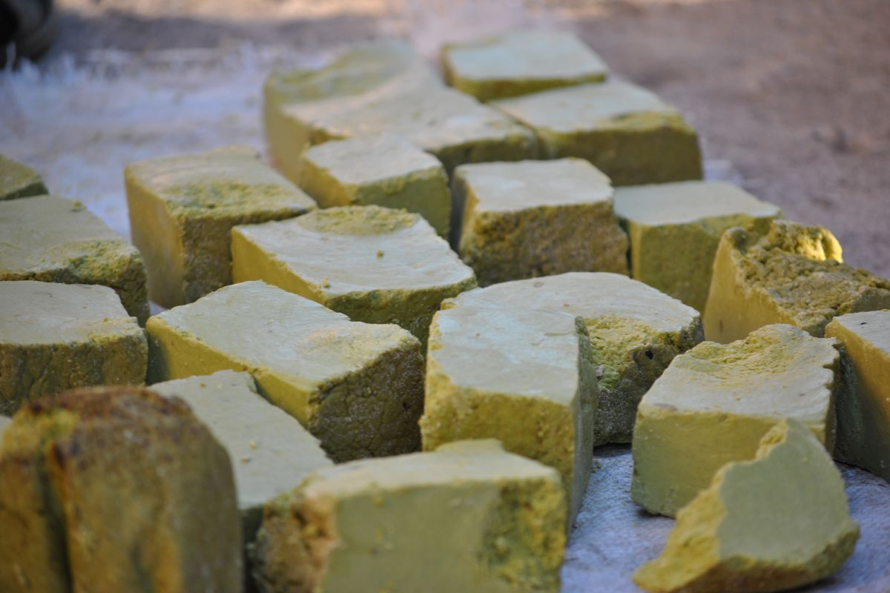

Siirt; Türk, Kürt ve Arap nüfusun bir arada yaşadığı, çok dilli ve çok kültürlü bir yapıya sahiptir. Bu çeşitlilik, şehrin günlük yaşamına, geleneklerine ve mutfak kültürünü etkilemiştir.

Şırnak, Batman, Bitlis ve Van ile komşu olan Siirt, dağlık ve engebeli bir arazi yapısına sahiptir. Dicle Nehri'nin en önemli kollarından biri olan Botan Çayı şehri boydan boya geçer.
Şehrin ekonomisi ağırlıklı olarak tarım ve hayvancılığa dayanır. Siirt en önemli markalaşmış ürünler şunlardır:

Siirt Fıstığı Siirt ili ve çevresinde yetişmektedir. Bölgede yetişen diğer fıstık türlerine göre Siirt fıstığı, hem fiziksel olarak ve hem de lezzet bakımından diğerlerinden farklıdır. Siirt fıstığını bu kadar lezzetli ve ayrıcalıklı kılan, Siirt yöresinin iklimidir. Fıstık genellikle sıcak iklimi sevmektedir. Siirt iklimi diğer illere göre daha sıcak ve kurak geçmektedir. Siirt’e diğer illere göre nem miktarı çok az olduğundan dolayı, Siirt fıstığının arzuladığı ortam oluşmaktadır.

Siirt Battaniyesi, Türkiye’nin Siirt iline özgü, tiftik keçisinin tüylerinden el tezgâhlarında dokunan geleneksel bir el sanatı ürünüdür. Yüzyılı aşkın bir geçmişe sahip olan bu battaniyeler, kültüründe bir yere sahip olup, nesilden nesile aktarılarak günümüze kadar varlığını sürdürmüştür. Hem işlevselliği hem de estetik değeriyle dikkat çeken Siirt battaniyeleri, yalnızca bir ısınma aracı değil, aynı zamanda kültürel bir miras ve hediyelik eşya olarak da öne çıkmaktadır.

Pervari Balı, Siirt ilinin Pervari ilçesindeki dağların eteklerinde ve yaylalarındaki florada bulunan üçgül, yonca, adaçayı, kekik, ballıbaba, peygamber çiçeği, geven, engerek otu, sığır dili, fiğ, kenger gibi çiçek ve bitkilerde bulunan bal özlerinin, bal arısı tarafından toplanması ile elde edilmektedir. Pervari balı, üretildiği ilçenin coğrafi yapısına ve bitki örtüsüne bağlı olarak koyu kıvamlı ve hoş kokulu bir nitelik arz etmektedir.

Bıttım sabunu, yabani fıstık (bıttım) yağı ve menengiç yağından yapılan bir sabun çeşididir. Bu sabunun egzama ve mantar gibi cilt hastalıklarını iyileştirmesi yanında kepek gibi döküntüleri ve saç dökülmelerini önleyici faktöre sahip olduğuna yönelik çok sayıda araştırma vardır.
Home